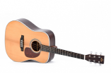

Акустические

Главное отличие акустической гитары и классической в том, что на акустическую гитару ставят исключительно металлические струны и звучит она глубже, звонче и насыщенней.
Корпус акустической гитары больше и массивней, чем у классической. Гитара имеет более узкий гриф. Он длиннее, чем гриф у классической гитары и выполнен из наиболее прочных пород дерева.
Классические

Классическая гитара – это самый узнаваемый музыкальный инструмент. На нём обучают учеников музыкальной школы по классу «Гитара». Благодаря своему происхождению она называлась классической испанской гитарой, а позже просто классической. Благодаря строению классики, меняется стиль игры и некоторые даже считают, что классикой овладевать легче, чем акустикой.